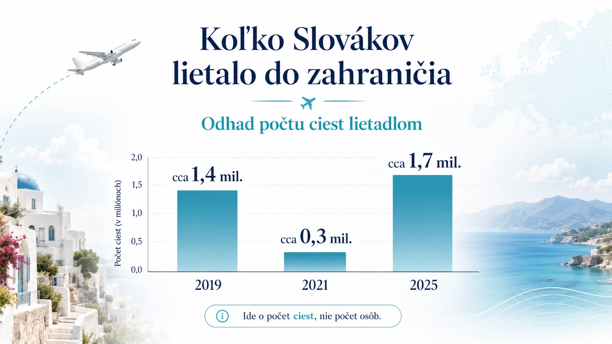

Pred pandémiou bolo lietanie pre Slovákov bežnou súčasťou dovoleniek. Potom prišiel covid, obmedzenia, neistota, rušené lety a návrat k autám. Dnes sa však situácia otočila. Slováci opäť cestujú do zahraničia vo veľkom a pri cestách za morom je záujem dokonca silnejší než pred pandémiou.
Tento článok sa nepozerá na počet cestujúcich na slovenských letiskách. To by nebolo úplne presné, pretože zo Slovenska lietajú aj cudzinci a časť Slovákov odlieta z Viedne, Budapešti, Krakova alebo iných letísk. Pozeráme sa preto na cestovanie obyvateľov Slovenska, teda na cesty Slovákov a rezidentov SR s prenocovaním.
Dôležitá poznámka: nejde o počet unikátnych ľudí. Ide o počet ciest. Jeden človek mohol v jednom roku letieť viackrát.
Pred pandémiou: lietadlo bolo silnou voľbou pri cestách do zahraničia
Rok 2019 môžeme brať ako posledný plný predpandemický rok. Štatistický úrad SR uvádza, že v roku 2019 využili Slováci lietadlo pri približne 31 % zahraničných pobytov. V roku 2025 bolo zahraničných ciest lietadlom 1,7 milióna, čo bolo asi o štvrtinu viac než v úspešnom predcovidovom roku. Z toho sa dá odvodiť, že pred pandémiou išlo približne o 1,35 až 1,4 milióna zahraničných ciest lietadlom ročne.
Pred covidom boli silné aj cesty k moru. V roku 2019 absolvovali Slováci viac ako 1,4 milióna ciest do prímorských oblastí. Neznamená to automaticky, že všetky boli lietadlom, pretože veľká časť Slovákov cestovala napríklad do Chorvátska autom. Ukazuje to však, že more a Stredomorie už pred pandémiou patrili medzi hlavné dovolenkové smery.
Pandémia: lietanie padlo najviac
Počas pandémie sa najviac zmenil práve spôsob dopravy. V roku 2020 leteli Slováci lietadlom už len pri 13 % zahraničných pobytov. V roku 2021 sa situácia mierne zlepšila, ale lietadlo tvorilo stále len približne 20 % zahraničných ciest. Pre porovnanie, v roku 2019 to bolo 31 %.
V praxi to znamenalo prudký prepad leteckých dovoleniek. Mnohí ľudia cestovali menej, vyberali si bližšie destinácie alebo išli autom. Počas pandémie výrazne rástol podiel áut pri cestách do zahraničia, zatiaľ čo letecká doprava bola utlmená.
Najlepšie to vidno na cestách k moru. V roku 2021 absolvovali Slováci len 495-tisíc ciest do prímorských oblastí, zatiaľ čo rok pred pandémiou to bolo viac ako 1,4 milióna.
Rok 2022: návrat, ale ešte nie úplný
Rok 2022 bol prvý výraznejší návrat cestovania. Slováci absolvovali 9,8 milióna súkromných domácich a zahraničných ciest s prenocovaním, čo bolo o 65 % viac než v roku 2021, ale stále približne o pätinu menej než v roku 2019.
Pri cestách do zahraničia sa letecká doprava dostala takmer na 30 %. To znamená, že sa už blížila k predpandemickému pomeru z roku 2019, keď lietadlo tvorilo 31 % zahraničných pobytov.
Aj more sa začalo vracať. V roku 2022 absolvovali Slováci 948-tisíc dovoleniek v prímorských oblastiach. Stále to bolo menej než pred pandémiou, ale oproti roku 2021 išlo o výrazný nárast.
Roky 2023 až 2025: lietanie sa vrátilo a zahraničie prekonalo maximum
V roku 2023 už Slováci zrealizovali 3,9 milióna ciest do zahraničia. Letecká preprava medziročne narástla o 36 % a cesty k moru dosiahli 1,46 milióna. To znamená, že prímorské oblasti sa už dostali približne na úroveň pred pandémiou, prípadne mierne nad ňu.
V roku 2024 pokračoval rast zahraničných ciest. Slováci zrealizovali 4,4 milióna ciest do zahraničia a približne tretina cestujúcich využila leteckú dopravu. Tento spôsob presunu bol o 13 % vyšší než v úspešnom predcovidovom roku. Medzi najobľúbenejšími zahraničnými krajinami boli Česko, Chorvátsko, Maďarsko, Taliansko, Poľsko, Turecko a Grécko.
Rok 2025 priniesol nový silný míľnik. Obyvatelia Slovenska zrealizovali 4,6 milióna súkromných ciest do zahraničia, čím prekonali doterajšie maximum z roku 2019 o 5,1 %. Viac ako tretina zahraničných ciest bola lietadlom, konkrétne približne 1,7 milióna ciest.
Prehľad: koľko Slovákov lietalo do zahraničia
Nasledujúce čísla treba čítať ako počet ciest, nie počet osôb. Pri niektorých rokoch ide o orientačný dopočet podľa verejne dostupných údajov Štatistického úradu SR.

| Rok | Zahraničné cesty Slovákov lietadlom | Poznámka |
|---|---|---|
| 2019 | cca 1,35 – 1,4 mil. | predpandemický štandard |
| 2020 | cca 100 – 120 tis. | prudký covidový prepad |
| 2021 | cca 280 – 300 tis. | mierne oživenie, stále hlboko pod normálom |
| 2022 | cca 900 tis. | návrat k lietaniu |
| 2023 | cca 1,2 mil. | ďalší rast |
| 2024 | cca 1,5 mil. | nad úrovňou roka 2019 |
| 2025 | cca 1,7 mil. | silný povojpandemický rok |
Najdôležitejšia zmena je jasná: v roku 2025 Slováci lietali do zahraničia viac než pred pandémiou.
Stredomorie verzus ostatné destinácie
Presné rozdelenie „koľko Slovákov letelo lietadlom do Stredomoria a koľko mimo Stredomoria“ nie je vo verejne dostupnej správe uvedené ako samostatná tabuľka. Štatistiky uvádzajú spôsob dopravy a destinácie, ale nie vždy ich spájajú do jednej presnej kombinácie.
Preto je rozdelenie nižšie kvalifikovaný odhad Letom po Stredomorí, nie oficiálna štatistika.
Za Stredomorie tu považujeme najmä Chorvátsko, Taliansko, Grécko, Turecko, Cyprus, Maltu, Španielsko pri Stredozemnom mori a ostrovné alebo prímorské dovolenkové destinácie v tejto oblasti. Pri Slovensku je dôležité myslieť aj na to, že časť Stredomoria, najmä Chorvátsko a severné Taliansko, Slováci často absolvujú autom.
| Rok | Odhad leteckých ciest do Stredomoria | Odhad leteckých ciest mimo Stredomoria |
|---|---|---|
| 2019 | cca 0,8 – 1,0 mil. | cca 0,4 – 0,6 mil. |
| 2021 | cca 0,15 – 0,2 mil. | cca 0,1 – 0,15 mil. |
| 2025 | cca 1,0 – 1,2 mil. | cca 0,5 – 0,7 mil. |
Zjednodušene: dnes môže do Stredomoria smerovať približne 60 až 65 % zahraničných leteckých ciest Slovákov. Zvyšok tvoria najmä mestské výlety, návštevy rodiny, pracovné alebo osobné cesty, severnejšia Európa a vzdialenejšie dovolenkové destinácie.
Tento odhad dáva zmysel aj podľa rebríčkov obľúbených krajín. Medzi často navštevovanými destináciami sa pravidelne objavujú Chorvátsko, Taliansko, Turecko a Grécko. V roku 2025 bolo Chorvátsko druhou najnavštevovanejšou krajinou po Česku a Slováci tam zrealizovali vyše pol milióna ciest.
Návrat Slovákov k moru
Cesty do prímorských oblastí ukazujú, ako rýchlo sa dovolenkové správanie po pandémii zmenilo. Po prudkom prepade v roku 2021 sa záujem o more postupne vrátil a v ďalších rokoch už prekonal predcovidové obdobie.
Vyhliadka na rok 2026: silný rok pre lietanie k moru
Rok 2026 ešte nemôžeme hodnotiť ako hotový fakt. Finálne štatistiky budú dostupné až po skončení roka. Dá sa však urobiť opatrná vyhliadka.
Základný predpoklad je, že počet zahraničných ciest lietadlom môže ďalej mierne rásť. Po silnom roku 2025 by sa mohol dostať približne na úroveň 1,8 až 2,0 milióna ciest.
| Rok | Letecké cesty Slovákov do zahraničia | Z toho odhad do Stredomoria | Ostatné destinácie |
|---|---|---|---|
| 2025 | cca 1,7 mil. | cca 1,0 – 1,2 mil. | cca 0,5 – 0,7 mil. |
| 2026 výhľad | cca 1,8 – 2,0 mil. | cca 1,1 – 1,35 mil. | cca 0,55 – 0,75 mil. |
Tento výhľad podporuje najmä rast ponuky letov. Ryanair oznámil, že v lete 2026 bude z Bratislavy prevádzkovať rekordných 33 destinácií a otvorí 10 nových liniek vrátane Alicante, Atén, Barcelony, Lamezie Terme, Malagy, Neapola, Palerma a Pisy.
Letisko Bratislava zároveň uvádza v letnom letovom poriadku 2026 viacero priamych spojení do stredomorských destinácií, napríklad Alghero, Alicante, Antalya, Atény, Barcelona, Bari, Korfu, Malaga, Malta, Mykonos a Neapol.
Dôležitá poznámka: letový poriadok z Bratislavy nie je to isté ako počet Slovákov, ktorí lietajú. Nie všetci cestujúci z Bratislavy sú Slováci a veľa Slovákov lieta aj z Viedne, Budapešti, Krakova alebo Košíc. Napriek tomu je rast priamej ponuky dobrým signálom, že dopyt po lietaní bude v roku 2026 silný.
Čo z toho vyplýva
Pandémia na chvíľu výrazne zabrzdila lietanie Slovákov. V roku 2020 a 2021 ľudia menej cestovali, častejšie volili auto a pri zahraničných cestách boli opatrnejší.
Po roku 2022 sa však trend otočil. Slováci sa k lietaniu vrátili a v roku 2025 už počet zahraničných ciest lietadlom prekonal predpandemické obdobie. Najsilnejšie z toho ťažia dovolenkové destinácie pri mori.
Pre Letom po Stredomorí je najzaujímavejší práve tento záver: Stredomorie zostáva pre Slovákov jednou z najdôležitejších dovolenkových oblastí. A ak sa naplní výhľad na rok 2026, leteckých ciest Slovákov do Stredomoria môže byť ešte viac než v roku 2025.
Poznámka k dátam
Oficiálne údaje v článku vychádzajú zo zverejnení Štatistického úradu SR a správ TASR, ktoré tieto údaje citujú. Čísla pri Stredomorí a rok 2026 sú označené ako odhad alebo výhľad, pretože verejné dáta priamo neuvádzajú kompletné rozdelenie „lietadlo × Stredomorie × ostatné destinácie“.